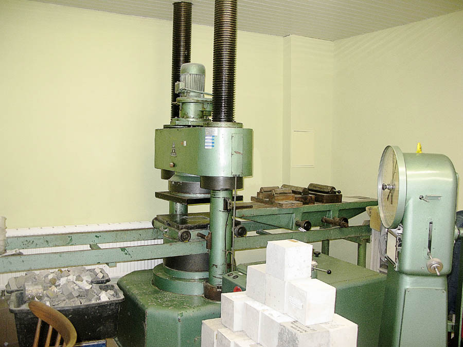

ČSN EN 12350-2Stanovení konzistence zkouškou sednutím Abramsova kužele
Základní zkušební metoda pro stanovení konzistence čerstvého betonu přímo na stavbě nebo v betonárně. Měří se pokles horního povrchu betonu po sejmutí kužele s přesností na 10 mm. Umožňuje zatřídění do tříd konzistence S1 až S5.
- ✓ Akreditovaná zkouška dle ČSN EN 12350-2 (akreditace ČIA č. 1116)
- ✓ Možnost provádění přímo na staveništi (mobilní laboratoř)
- ✓ Zatřídění do tříd konzistence S1 (10–40 mm) až S5 (≥ 220 mm)